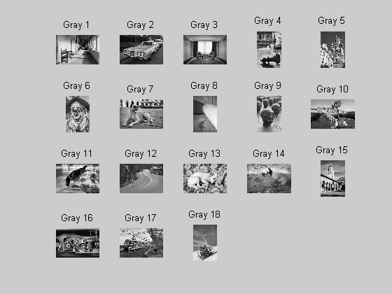
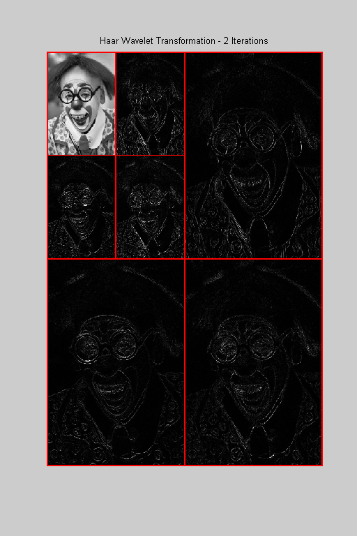
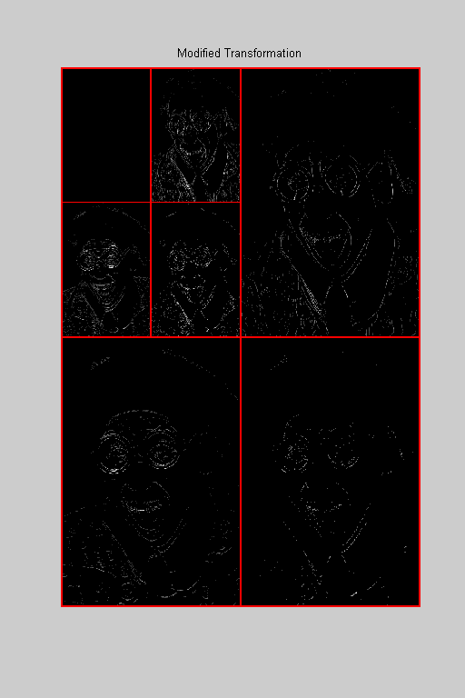

<!DOCTYPE html
  PUBLIC "-//W3C//DTD XHTML 1.0 Strict//EN">
<html xmlns:mwsh="http://www.mathworks.com/namespace/mcode/v1/syntaxhighlight.dtd">
   <head>
      <meta http-equiv="Content-Type" content="text/html; charset=utf-8">
   
      <!--
This HTML is auto-generated from an M-file.
To make changes, update the M-file and republish this document.
      -->
      <title>Thresholding in Edge Detection</title>
      <meta name="generator" content="MATLAB 7.5">
      <meta name="date" content="2007-12-30">
      <meta name="m-file" content="thresholdingedgedetection"><style>
      <link rel="stylesheet" type="text/css" href="style.css">

</head>
   <body>
<div class="header">
	<div class="left"><a href="matlab:edit thresholdingedgedetection">Open thresholdingedgedetection.m in the Editor</a></div>
      <div class="right"><a href="matlab:echodemo thresholdingedgedetection">Run in the Command Window</a></div>
</div>
      <div class="content">
         <h1>Thresholding in Edge Detection</h1>
         <introduction>
            <p>To perform naive edge detection in a digital image, we simply compute the wavelet transformation of the digital image, convert
               the lowpass portion elements to zero, and then perform an inverse transform.  If we wish, we can perform thresholding on the
               modified transformation before inverting. In this case, certain elements of the highpass portions of the transform are converted
               to zero.  These elements are those which the threshold process believes do not significantly contribue to any edges in the
               original image.
            </p>
            <p>It is helpful to review the Naive Edge Detection demo prior to viewing this demo.</p>
         </introduction>
         <h2>Contents</h2>
         <div>
            <ul>
               <li><a href="#1">Import a Digital Image</a></li>
               <li><a href="#3">Compute the Discrete Wavelet Transformation</a></li>
               <li><a href="#4">Compute the Tolerance for Thresholding</a></li>
               <li><a href="#6">Perform Thresholding on Highpass Portions of the Transformation</a></li>
               <li><a href="#7">Replace the Lowpass Portion with a Matrix of Zeros</a></li>
               <li><a href="#8">Compute the Inverse Discrete Wavelet Transformation</a></li>
               <li><a href="#10">Things to Try</a></li>
            </ul>
         </div>
         <h2>Import a Digital Image<a name="1"></a></h2>
         <p>We begin by importing a digital image. We will use one of the images that comes, courtesy of Radka Tezaur, with the DiscreteWavelets
            Toolbox.  The command ShowThumbnails can be used to see what choices are available.
         </p><pre class="codeinput">ShowThumbnails(<span class="string">'ImageType'</span>,<span class="string">'GrayScale'</span>);

<span class="comment">%Let's use Gray 6.</span>
</pre> <p>The code below reads this image from disk and plots it. ImageNames gives the absolute path to all included image files.</p><pre class="codeinput">gry=ImageNames(<span class="string">'ImageType'</span>,<span class="string">'GrayScale'</span>);

<span class="comment">% Use ImageRead to read the image and store it in matrix A.</span>
A=ImageRead(gry{6});

<span class="comment">% Use ImagePlot to plot the image.</span>
clf;
ImagePlot(A);
title(<span class="string">'A Clown'</span>);
</pre> <h2>Compute the Discrete Wavelet Transformation<a name="3"></a></h2>
         <p>We will use the discrete Haar wavelet transformation for this demo.   We next compute two iterations of the HWT and plot the
            result.
         </p><pre class="codeinput"><span class="comment">% Compute the HWT and store in matrix B.</span>
its=2;
B=HWT2D(A,its);

<span class="comment">% Plot the HWT.</span>
clf;
WaveletDensityPlot(B,its,<span class="string">'DivideLinesColor'</span>,[1 0 0],<span class="keyword">...</span>
    <span class="string">'DivideLinesThickness'</span>,[2 2])
title(sprintf(<span class="string">'Haar Wavelet Transformation - %i Iterations'</span>,its));
</pre> <h2>Compute the Tolerance for Thresholding<a name="4"></a></h2>
         <p>We now compute the tolerance needed to perform thresholding.  We will use alpha = 1 to determine the tolerance.  The code
            that follows is based on the material that appears in Section 6.4 of the book.
         </p><pre class="codeinput"><span class="comment">% Separate the parts of the transform using WaveletMatrixToList.</span>
wtlist=WaveletMatrixToList(B,its);

<span class="comment">% We first store the absolute values of all elements in the highpass</span>
<span class="comment">% portions of hte tranformation in a vector.</span>
S=[];
<span class="keyword">for</span> j=1:its
    <span class="keyword">for</span> k=1:3
        t=reshape(wtlist(j,k).hp,1,numel(wtlist(j,k).hp));
        S = [S abs(t)];
    <span class="keyword">end</span>
<span class="keyword">end</span>
</pre><pre class="codeinput"><span class="comment">%Now we set alpha = 1 and find the threshold.</span>
alpha=1;
<span class="comment">%Create an initial starting guess for the tolerance.</span>
t1=(max(S)+min(S))/2;
<span class="comment">%Create a value to use to determine when to terminate the algorithm.</span>
diff=t1;
str=sprintf(<span class="string">'t1 = %f, diff = %f.'</span>,t1,diff);
disp(str);
<span class="keyword">while</span> diff&gt;=alpha
    <span class="comment">%Select everything in S that is larger than t1.</span>
    S1=nonzeros(S.*(S&gt;t1));
    <span class="comment">%Compute the mean of the elements in S1.</span>
    avg1=mean(S1);
    <span class="comment">%Select everything in S that is less than or equal to t1.</span>
    S2=nonzeros(S.*(S&lt;=t1));
    <span class="comment">%Compute the mean of the elements in S2.</span>
    avg2=mean(S2);
    <span class="comment">%Compute the new threshold and new difference.</span>
    t2=(avg1+avg2)/2;
    diff=abs(t1-t2);
    t1=t2;
    str=sprintf(<span class="string">'avg1 = %f, avg2 = %f, t1 = %f, and diff = %f.'</span>,avg1,avg2,<span class="keyword">...</span>
        t1,diff);
    disp(str);
<span class="keyword">end</span>

str=sprintf(<span class="string">'\nWe will use the tolerance t1 = %f.'</span>,t1);
disp(str);
</pre><pre class="codeoutput">t1 = 196.000000, diff = 196.000000.
avg1 = 242.434167, avg2 = 7.992738, t1 = 125.213453, and diff = 70.786547.
avg1 = 172.316133, avg2 = 7.550826, t1 = 89.933480, and diff = 35.279973.
avg1 = 133.940186, avg2 = 7.056485, t1 = 70.498335, and diff = 19.435144.
avg1 = 111.824471, avg2 = 6.609880, t1 = 59.217175, and diff = 11.281160.
avg1 = 98.756956, avg2 = 6.270007, t1 = 52.513481, and diff = 6.703694.
avg1 = 90.868030, avg2 = 6.031745, t1 = 48.449888, and diff = 4.063594.
avg1 = 85.599825, avg2 = 5.857103, t1 = 45.728464, and diff = 2.721424.
avg1 = 82.218400, avg2 = 5.737483, t1 = 43.977941, and diff = 1.750523.
avg1 = 79.927961, avg2 = 5.653052, t1 = 42.790506, and diff = 1.187435.
avg1 = 78.568047, avg2 = 5.601449, t1 = 42.084748, and diff = 0.705758.

We will use the tolerance t1 = 42.084748.
</pre><h2>Perform Thresholding on Highpass Portions of the Transformation<a name="6"></a></h2>
         <p>We now use t1 to threshold the highpass portions of the transformation. Any element in any highpass portion less than t1 (in
            absolute value) is converted to 0.
         </p><pre class="codeinput"><span class="keyword">for</span> j=1:its
    <span class="keyword">for</span> k=1:3
        wtlist(j,k).hp = wtlist(j,k).hp.*(abs(wtlist(j,k).hp)&gt;=t1);
    <span class="keyword">end</span>
<span class="keyword">end</span>
disp(<span class="string">'Thresholding complete.'</span>);
</pre><pre class="codeoutput">Thresholding complete.
</pre><h2>Replace the Lowpass Portion with a Matrix of Zeros<a name="7"></a></h2>
         <p>We next replace the lowpass portion of the transformation with a matrix of zeros.</p><pre class="codeinput"><span class="comment">% Grab the dimensions of A and form an appropriately sized zero matrix.</span>
wtlist(1).lp=zeros(size(A)./[2^its 2^its]);

<span class="comment">% Converte wtlist back to a matrix and plot the result.</span>
B=WaveletListToMatrix(wtlist,its);
clf;
WaveletDensityPlot(B,its,<span class="string">'DivideLinesColor'</span>,[1 0 0],<span class="keyword">...</span>
    <span class="string">'DivideLinesThickness'</span>,[2 2])
title(<span class="string">'Modified Transformation'</span>);
</pre> <h2>Compute the Inverse Discrete Wavelet Transformation<a name="8"></a></h2>
         <p>The final step in the process is to compute two iterations of the inverse HWT on the modified transformation now housed in
            B.
         </p><pre class="codeinput"><span class="comment">% Compute the inverse transformation.</span>
Edges=IHWT2D(B,its);

clf;
ImagePlot(Edges);
title(<span class="string">'The Edges in the Original Image'</span>);
</pre> <p>You can get perhaps a better look at the edges if you plot the negative of Edges.</p><pre class="codeinput"><span class="comment">% Plot the negative of Edges.</span>
clf;
ImagePlot(255-Edges);
title(<span class="string">'The Edges in the Original Image'</span>);
</pre> <h2>Things to Try<a name="10"></a></h2>
         <p>Make a copy of this demo and :</p>
         <div>
            <ul>
               <li>pick a different image from those provided or use one (grayscale) of your own</li>
               <li>change the value of iterations to any integer 1, 2,..., 8.</li>
            </ul>
         </div><pre class="codeinput">close <span class="string">all</span>;
</pre><p class="footer"><br>
            Published with MATLAB&reg; 7.5<br></p>
      </div>
      <!--
##### SOURCE BEGIN #####
%% Thresholding in Edge Detection
%
% To perform naive edge detection in a digital image, we simply compute the
% wavelet transformation of the digital image, convert the lowpass portion
% elements to zero, and then perform an inverse transform.  If we wish, we
% can perform thresholding on the modified transformation before inverting.
% In this case, certain elements of the highpass portions of the transform
% are converted to zero.  These elements are those which the threshold
% process believes do not significantly contribue to any edges in the
% original image.
%
% It is helpful to review the Naive Edge Detection demo prior to viewing
% this demo.

%% Import a Digital Image
% We begin by importing a digital image. We will use one of the images that comes, courtesy of Radka Tezaur, with 
% the DiscreteWavelets Toolbox.  The command ShowThumbnails can be used to see what choices are available.
ShowThumbnails('ImageType','GrayScale');

%Let's use Gray 6.

%% 
% The code below reads this image from disk and plots it.
% ImageNames gives the absolute path to all included image files.
gry=ImageNames('ImageType','GrayScale');

% Use ImageRead to read the image and store it in matrix A.
A=ImageRead(gry{6});

% Use ImagePlot to plot the image.
clf;
ImagePlot(A);
title('A Clown');

%% Compute the Discrete Wavelet Transformation
% We will use the discrete Haar wavelet transformation for this demo.   We next compute two iterations
% of the HWT and plot the result.

% Compute the HWT and store in matrix B.
its=2;
B=HWT2D(A,its);
 
% Plot the HWT.
clf;
WaveletDensityPlot(B,its,'DivideLinesColor',[1 0 0],...
    'DivideLinesThickness',[2 2])
title(sprintf('Haar Wavelet Transformation - %i Iterations',its));

%% Compute the Tolerance for Thresholding
% We now compute the tolerance needed to perform thresholding.  We will use
% alpha = 1 to determine the tolerance.  The code that follows is based on
% the material that appears in Section 6.4 of the book.

% Separate the parts of the transform using WaveletMatrixToList.
wtlist=WaveletMatrixToList(B,its);

% We first store the absolute values of all elements in the highpass
% portions of hte tranformation in a vector.
S=[];
for j=1:its
    for k=1:3
        t=reshape(wtlist(j,k).hp,1,numel(wtlist(j,k).hp));
        S = [S abs(t)];
    end
end

%%
%Now we set alpha = 1 and find the threshold.
alpha=1;
%Create an initial starting guess for the tolerance.
t1=(max(S)+min(S))/2;
%Create a value to use to determine when to terminate the algorithm.
diff=t1;
str=sprintf('t1 = %f, diff = %f.',t1,diff);
disp(str);
while diff>=alpha
    %Select everything in S that is larger than t1.
    S1=nonzeros(S.*(S>t1));
    %Compute the mean of the elements in S1.
    avg1=mean(S1);
    %Select everything in S that is less than or equal to t1.
    S2=nonzeros(S.*(S<=t1));
    %Compute the mean of the elements in S2.
    avg2=mean(S2);
    %Compute the new threshold and new difference.
    t2=(avg1+avg2)/2;
    diff=abs(t1-t2);
    t1=t2;
    str=sprintf('avg1 = %f, avg2 = %f, t1 = %f, and diff = %f.',avg1,avg2,...
        t1,diff);
    disp(str);
end

str=sprintf('\nWe will use the tolerance t1 = %f.',t1);
disp(str);

%% Perform Thresholding on Highpass Portions of the Transformation
% We now use t1 to threshold the highpass portions of the transformation.
% Any element in any highpass portion less than t1 (in absolute value) is
% converted to 0.

for j=1:its
    for k=1:3
        wtlist(j,k).hp = wtlist(j,k).hp.*(abs(wtlist(j,k).hp)>=t1);
    end
end
disp('Thresholding complete.');

%% Replace the Lowpass Portion with a Matrix of Zeros
% We next replace the lowpass portion of the transformation with a matrix of zeros.

% Grab the dimensions of A and form an appropriately sized zero matrix.
wtlist(1).lp=zeros(size(A)./[2^its 2^its]);

% Converte wtlist back to a matrix and plot the result.
B=WaveletListToMatrix(wtlist,its);
clf;
WaveletDensityPlot(B,its,'DivideLinesColor',[1 0 0],...
    'DivideLinesThickness',[2 2])
title('Modified Transformation');

%% Compute the Inverse Discrete Wavelet Transformation
% The final step in the process is to compute two iterations of the inverse HWT on the modified transformation now housed
% in B.

% Compute the inverse transformation.
Edges=IHWT2D(B,its);

clf;
ImagePlot(Edges);
title('The Edges in the Original Image');

%%
% You can get perhaps a better look at the edges if you plot the negative of Edges.

% Plot the negative of Edges.
clf;
ImagePlot(255-Edges);
title('The Edges in the Original Image');

%% Things to Try
% Make a copy of this demo and :
%
% * pick a different image from those provided or use one (grayscale) of your own
% * change the value of iterations to any integer 1, 2,..., 8.
% 

%%
close all;
displayEndOfDemoMessage(mfilename)
##### SOURCE END #####
-->
   </body>
</html>